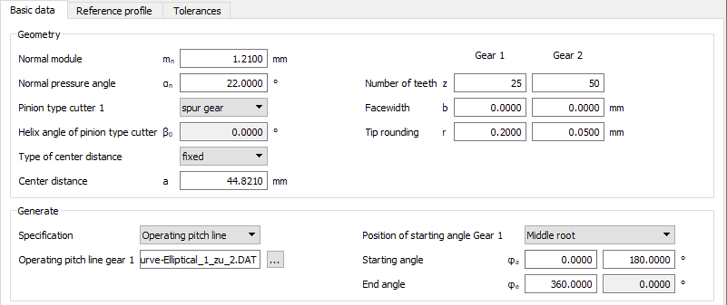
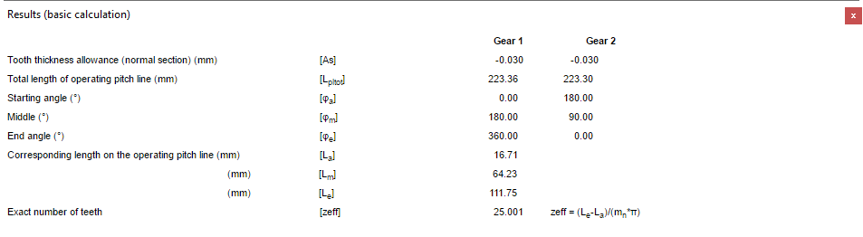

|
|
|


几何

图21.1：基本数据选项卡：非圆齿轮副的输入项
模数通过"结果窗口"定义（工作节线总长度/[齿数× π]=模数）。

图21.2：结果窗口
为节省尺寸计算过程中的第一阶段时间，我们建议您不输入总齿数 z。我们建议您进行计算时使用较低的齿数（例如 2）。在这种情况下，虽然所有工作节线都被完全计算，但仅计算并显示指定的齿数（2）。
最初，以法向截面中 20° 的压力角 αn 开始计算。之后您可以更改该角度，以替代变位量的调整，或用于优化齿形。
Geometry
Figure 21.1: Basic data tab: entries for a non-circular gear pair
The module is defined from the "Results window" (total length of operating pitch line/[number of teeth* π]=module).
Figure 21.2: Results window
To save time in the first phase of the sizing process, we recommend you do not enter the total number of teeth z. We suggest you perform the calculation with a lower number of teeth (e.g. 2). In this case, although all the operating pitch lines are calculated completely, only the specified number of teeth (2) are calculated and displayed.
Initially, start the calculation with a pressure angle in the normal section αn of 20°. Later on you can change this angle instead of the profile shift or to optimize the tooth form.